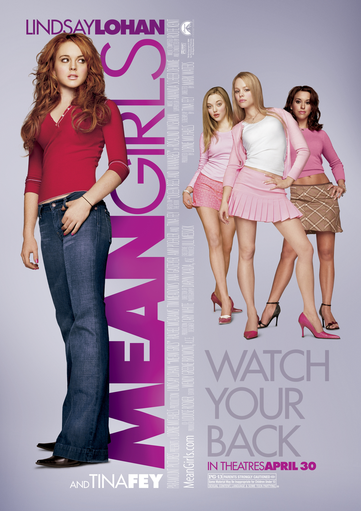

Mean Girls is a 2004 teen comedy movie directed by Mark Waters and written by Tina Fey. The movie stars Lindsay Lohan as Cady Heron, a teenager who moves to the United States after being homeschooled in Africa. She enters a new high school and becomes involved with a popular group known as the Plastics.
Cady Heron has spent most of her childhood being homeschooled in Africa, so adjusting to a regular high school is difficult for her. She becomes friends with Janis Ian and Damian, who introduce her to the different social groups at school. Cady is eventually invited to join the Plastics, the school's most popular group led by Regina George.
As Cady becomes more involved with the Plastics, she begins changing her personality and behavior to fit in. Her actions eventually cause problems with her friends and classmates. Throughout the movie, Cady learns about friendship, popularity, and the importance of staying true to herself.
Lindsay Lohan plays Cady Heron, the main character who has to adjust to a completely new social environment after moving to the United States.
Rachel McAdams plays Regina George, the leader of the Plastics and one of the most influential students at North Shore High School.
Amanda Seyfried plays Karen Smith, one of Regina's closest friends and a member of the Plastics.
Lacey Chabert plays Gretchen Wieners, another member of the Plastics who is known for trying to keep up with Regina.
Mean Girls is one of my favorite movies because it is funny, entertaining, and memorable. I enjoy the different personalities of the characters and the way the movie shows the social problems that can happen in high school. The movie also has many memorable scenes and quotes that have made it popular even years after its release.
I also like how the story shows Cady learning from her mistakes. Although she becomes obsessed with popularity, she eventually realizes that being accepted by everyone is not as important as having genuine friendships and being herself.